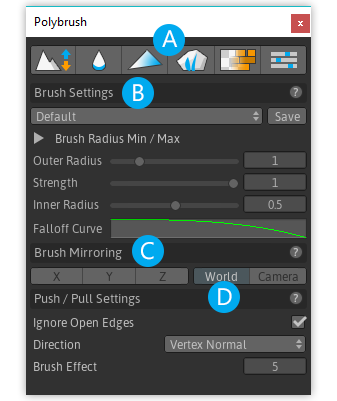

Mode Toolbar
(A) : Sets and displays the active Brush Mode. Active mode is indicated by a blue accent line below it's icon.
Choosing any of Unity's standard tools (Pan, Move, Rotate, Scale) will automatically de-activate Polybrush.
Brush Settings
(B) : Brush Settings lets you choose Radius, Falloff, Strength/Opacity, and Falloff Curve.
You may also save and load often used brushes via the Brush Preset selector.
Brush Mirroring
(C) : Chooses the Brush Mirroring methods to use with the current brush.
Mode Settings
(D) : Any additional settings specific to the current Brush Mode.